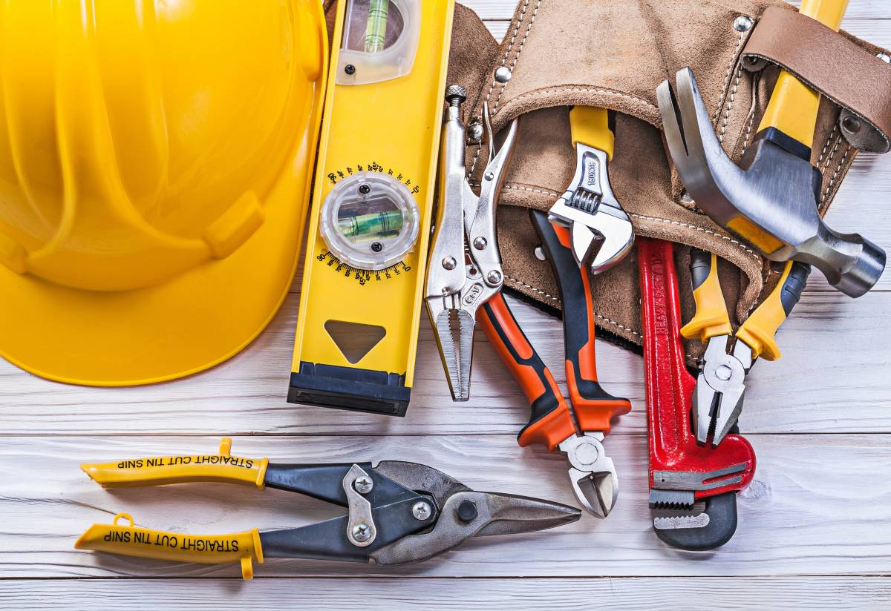

After visiting the impacts page, you should know all about the consequences of AI. But what can you do about it today? The first thing is choosing the right tool for the job. Different AI models are better at certain things, so picking the right AI for YOUR job can help with efficiency, ultimately reducing the impacts of AI usage!
Getting right with responsible AI will take time and accountability. While it is true that AI can make you super productive, it is important to realize there are trade-offs such as fairness and accountability. People must take these into account and make a decision based on these competing priorities.


Reflecting on your everday habits and critizing them can also help with sustainabliity. Do you use AI as a search engine? Instead, use a search engine to lower your energy usage. It does not even have to be AI related, such as taking your bike to work instead of driving.